I created a project in Tinkercad. We learned how CAD can
be used in order to create designs for Mechanical Engineering, along with some
safety. We made a practice cad from a home appliance for a competition
that I won.
9/9/22:
We started to cad our rupe goldberg machine which allowed us to have a reference for our official machine
Our cad project was a little ruff with the sizes, but has a possibility to work with the set dimensions
9/16/22:
We did a boat contest, that consisted of making paper boats on top of water.
Our boat lasted the 5 minute timer, at around 60 mg of weight. Our boat was shaped like a box, and was able to
hold more weight, but we chose to lessen the weight to ensure stability.
9/23/22:
We created our Rube Goldberg machine, which popped a baloon. We used cardboard, tape, and a baseball in order
to create our machine. We differed from our CAD as we were too ambitious with our CAD, and we needed to level out with our work ethics.
Our machine worked almost immendiately, but our baloon fell and popped on its own before we were able to hit it.
9/30/22:
We dissected a laptop that was once used by CVHS. We were not able to take out the hardrive on the first computer, and needed to work with another one. When we started
to get towards the end of the project, we were met by some struggles that sourced from the main plate, which did not want to come out.
10/7/22:
We made a cad of a prosthetic part for an animal. I created one for a horse leg up to the calf.
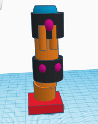
10/13/22:
We had started our lecture on aerospace engineering with our project being
a bottle rocket. Our group is also starting to Cad this project and are planning on creating the real
rocket next week. We had a challenge which consisted of making paper
airplanes, which mine did not work the best.
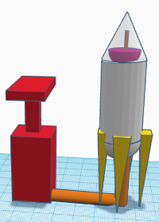
10/21/22:
We launched our bottle rocket this week. It did not go as expected and did not take off.
I believe that this is due to us taking a big risk by cutting our bottle and trying to reattach it to another bottle later on.
Due to this, our bottle did not go as expected and our container gave up before the pressure reached the correct height.
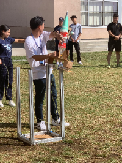
10/27/22:
We learned about Environmental Engineering. We did a project that involved filtering out solubles from water, and we were able to
see how different materials help to filter out solubles. We used large rocks, small rocks, sand, and one cotton ball in order to filter.
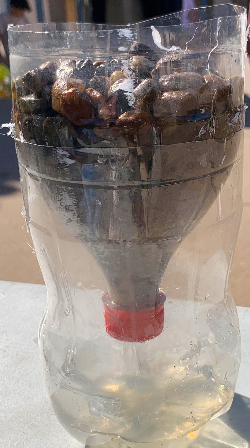
11/4/22:
We started learning about Electrical Engineering. We used Tinkercad to create breadboards that helped to power a led light. I created a switch and button that gave light to one of two switches depending on which way the switch was set to give power. We learned about making LEDs in series and parallel as well.
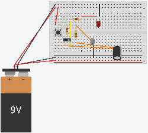
11/10/22:
We started to use breadboards this week. I was unable to take a picture of the actual breadboard, but we were able to make parallel lights and saw the results.
This week, we did a challenge, and we logically found out whether its better to take a math class or write numbers from 1-1,000,000. My group wrote some code and found out that you would need an average of 0.09s per digit if you want to make writing numbers more efficient.
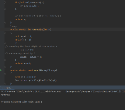
11/18/22:
We coded with a real arduino in order to power lights. We were also able to get a button to work, along with leds in sequence.
12/2/22:
We started to create our spaghetti bridge. We tried to create an actual bridge with two sides and things in the center. We did notice that we would later have troubles with removing the bridge from the cardboard, but we didn't have any other options at the time. We also decided that we would need the next session in order to fix the bridge and connect the ends together.
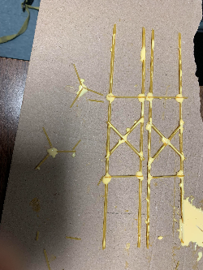
12/9/22:
We ended up breaking the first bridge because it didn't come off the cardboard properly. We also made a mistake in which a part of the spaghetti was submerged in glue, which ended up making it flexible and not break. We then decided to test a bridge by adding over the reccomended limit.
12/16/22:
We were able to test one of our bridges, which was able to withstand a bucket. We also ended up using more than the reccomended amount of glue, but we noticed that the point of the project was about ratio, we decided that a heavier weight would be ok if it could withstand a higher ratio of water.
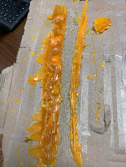
1/13/23:
We started the year by working on understanding business engineering. We came up with a potential product that we tried to propose to the class. My group tried to come up with the idea of a security camera which would allow for facial recognition, locking the doors when someone approaches that is not the owner or someone registered. It would link to an app that would also allow for people to get alerts whenever someone was detected.
1/18/23:
We learned about chemical engineering and what it entails. We did a small challenge in which we came up with ideas of how to stop bromate for contaminating water. Our group remembered how the Los Angeles lake added "shade balls" in order to stop this problem in the past.
1/27/23:
We started our project, with an Arduino car being the result. We intend on making the car be remote controlled and be able to move in any direction the user inputs. We set up a build of materials along with a statement in order to present our project.
2/1/23:
We built a CAD for our Arduino car. The car has clear borders in order to see the inside mechanics and how we plan on building the car. We did not connect the wires, but we plan on making a small hole in the bottom of the cardboard in order to fish the wires through while still making it clean looking.
2/10/23:
We started to build our car in class today. Since we didn't have our complete materials, we ended up creating a box that we assume will be large enough to fit in all of our materials. We plan on getting the materials next week, but we are also unsure of exactly what materials we will end up having
2/17/23:
We had to change our design due to a lack of motors. This led to us creating wheels using CDs. However, the rest of our CAD should still be able to be completed properly. We also started to try the code, and get the motor to run properly.
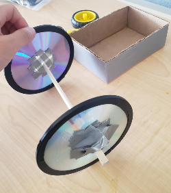
2/24/23:
We added the wheels to the car and started to work on the actual coding portion. We were able to ge the card to drive straight on its own, but it started to steer to the right when we set it down. We noticed that the motor wheels were wobling, but it would still shift to the right when we reversed the wheel itself. \
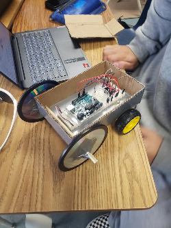
3/3/23:
We tested our car this week. We were still unable to get the car to run with a remote control, along with not having the time to attach LEDs. We also still noticed the drifting issue, but it was the last week we had to build the car, so we needed to just try it to see how it would work. We did notice that our car had more design than many other cars, which indicated that we allocated more time to the build of the car compared to the actual mechanics and electronics.
3/24/23:
We started to work on our next project, which was an Egg drop from the 3rd story. We plan on using ballons to wrap around an egg, and taped it in order to provide support. We also plan on taping a bottom section of the baloons in order to provide supporst for the baloon on impact, because are unsure on whether or not the baloon can pop on impact with the ground.
3/31/23:
We built our project and tested it this week. The egg did not pop, alogn with the baloon. We also noticed that our structure had bounced on impact, due to the baloons being our main flooring. WE had also notived that unlike a few other groupsm our parachute held well, which we attribute to the fact that we added cut out a hole in the top in order to allow captured air to escape through the top instead of outward.
4/7/23:
We started to work on our final project, a cardboard boat able to float 2 people and bring them across a pool. We intend to create a regtangular prism then add a cone shaped front in order to work around water resistance. We also made some other designs, however, we believe that this one will give us the best chance to make it across the pool. Since the main point is to make it across first, we intend on going with a safer option instead of working on going faster or using less materials than other groups.
4/14/23:
We worked on cutting some of the cardboard, but we still don't have tape, so we were unable to put the parts together. We worked on making out basic layout, cutting dimeonsions in order to best fit the people that are going to be sitting on the boat in the future. We have still yet to work on the paddles, but we intend on changing the design in order to account for the stability of the cardboard. Instead of adding poles for paddling, we intend on having the people have a piece of flat cardboard in order to paddle the boat using arm strength.
4/21/23
We were able to get a basic structure design for our boat this week. However, due to open House, we decided to push off the cutting and taping for next week. We have some ideas of how we want to construct the boat, so we plan on creating a basic design for our boat next week.
4/28/23
This week, we started to construct our boat. We created the basic structure, being held by small pieces of tape. This was because our full tape rolls have not arrived yet, so we are limited to using a few small pieces in order to get a layout, then reinforce the gaps and bottom later. We also still need to create paddles, which we plan to change from the orginal design. We now plan on having a small piece of cardboard taped onto our hands, then use that as a paddle. We changed the design because we believe that the amount of force needed to push a stick and paddle is more than taping a piece of carboard on our hands. We also believe that the paddle may break if there is a stick, due to water resistance.
5/5/23
This week, we were able to get our tape roll. We ended up finishing the whole roll by taping the bottom of the boat. We believe that this will help keep water out of the bottom of the boat, which will keep it buoyant for longer, as we need to cross a pool and back. We however, forgot to reserve tape for the paddles, so we futher changed our idea into using our hands for paddles, as there is no need to move the boat swiftly, but to just get the boat across.
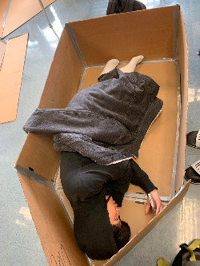
5/12/23
We did a challenge this week, which was to build a paper mechanism to roll a marble. Our group followed a tutorial, butwwe used copy paper and freestyle cut the paper, instead of using pre-marked construction paper. We were able to get the marble to roll with some success, but we were unable to get the velocity and acceleration required to have the marble complete a loop. We also had some complications with the tube, as seen in the video, but this was an easy fix that needed us to tape the interior. We ran across this error due to time constraints, and a desperation attempt to roll the marble in a loop.